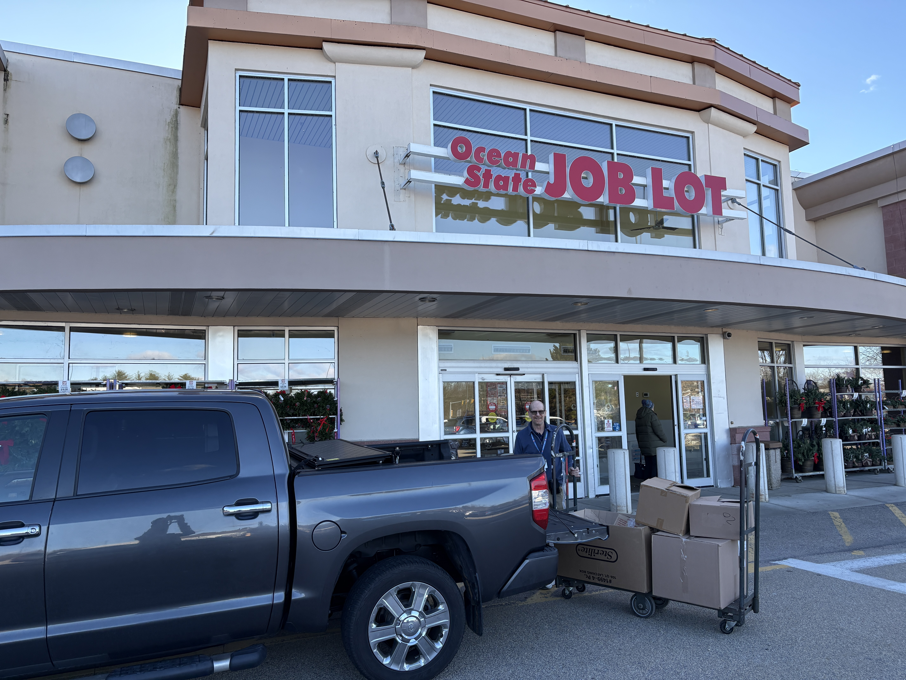
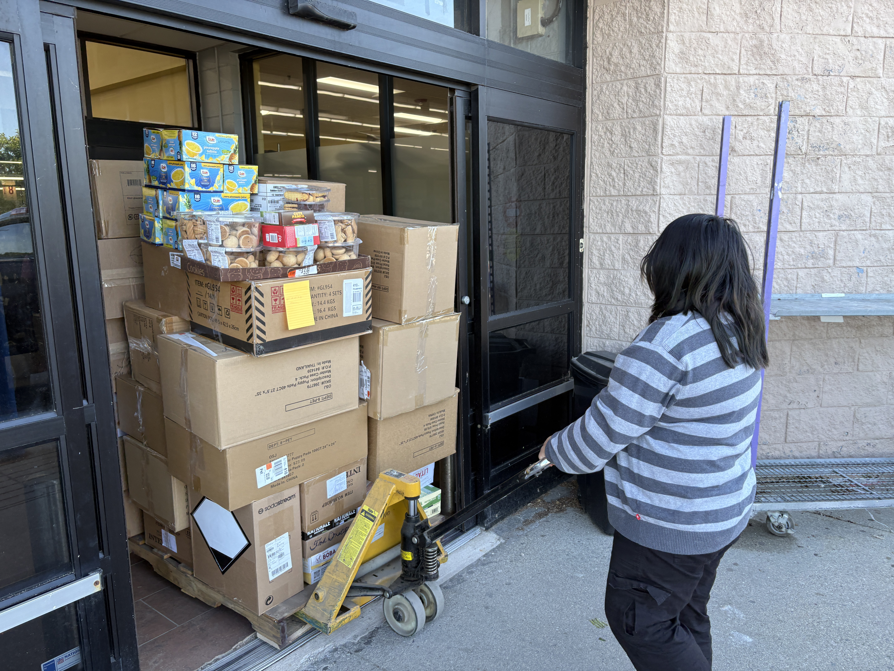
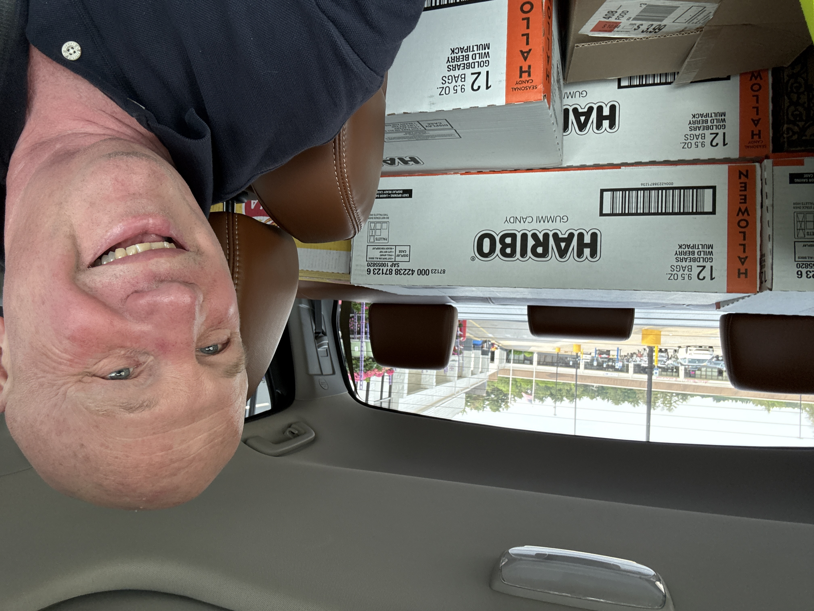
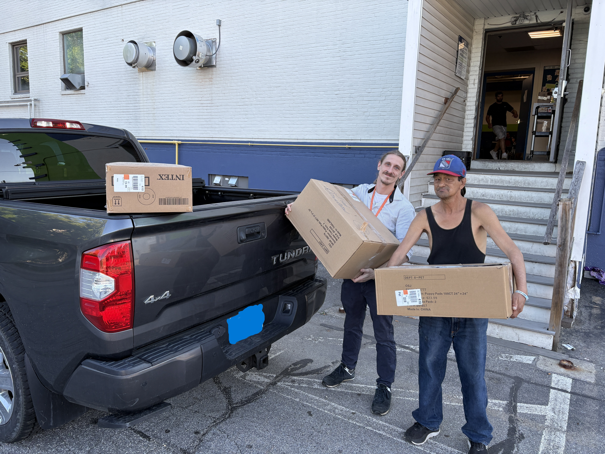
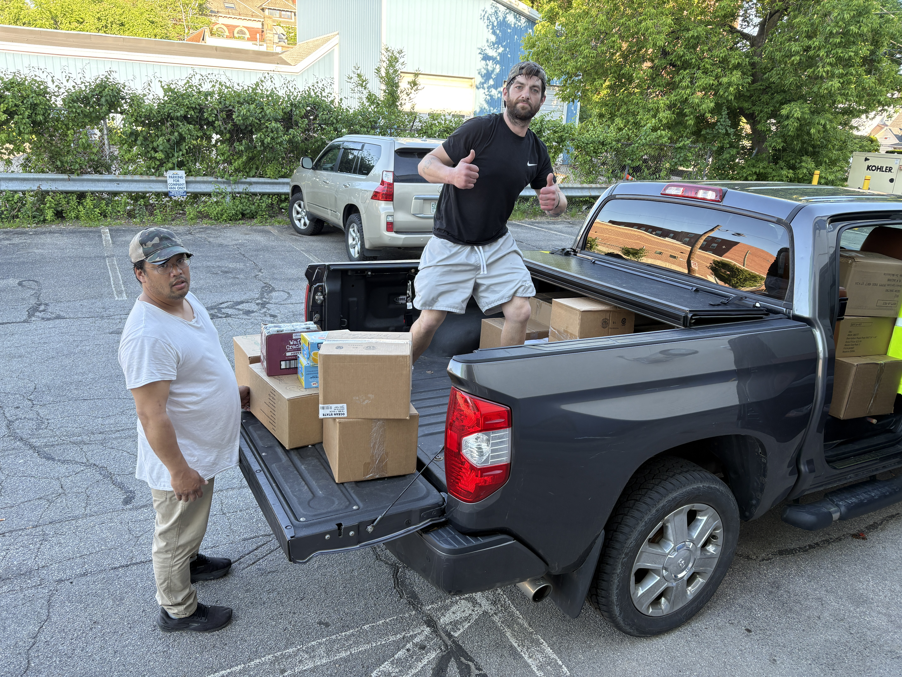

Two Missions One PurposeHelping People Move Forward
Every successful pickup depends on people willing to organize supplies, load vehicles, and carry each donation to the next stop. These moments show the practical teamwork behind moving resources into the community.



Chuck's truck is filled with donated food from Ocean State Job Lot, ready to continue from pickup to delivery. Each box represents food that can move from available inventory to practical help for people in the community.
A dependable vehicle, a committed volunteer, and a strong partner can connect surplus goods with organizations that put them to use. That connection is at the heart of TCF's food logistics mission.

